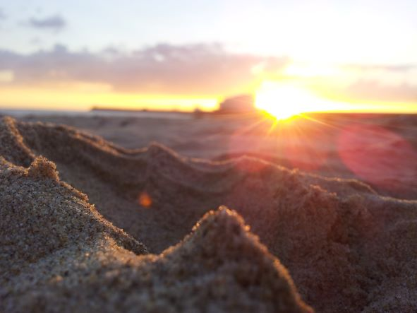

Listen

Fluchtpuntk
For voice, flute and live electronics. Work comissioned by CG Ensemble (Bogotá), dedicated to Beatriz Elena Martínez, Laura Cubides and Rodolfo Acosta R. World premiere at the «En el acto de sonar» Festival (Bogotá) 05/03/2022. For an optimal listening, use headphones (Binaural)